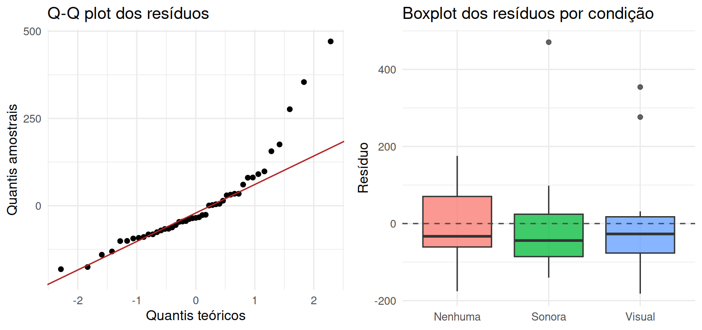
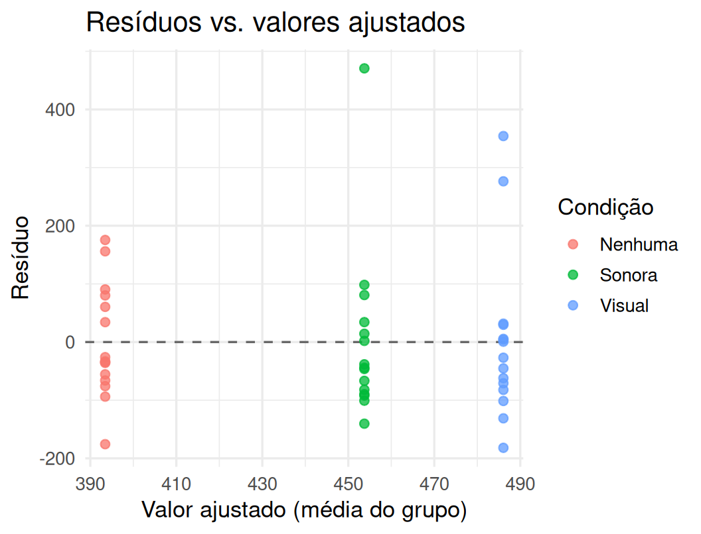
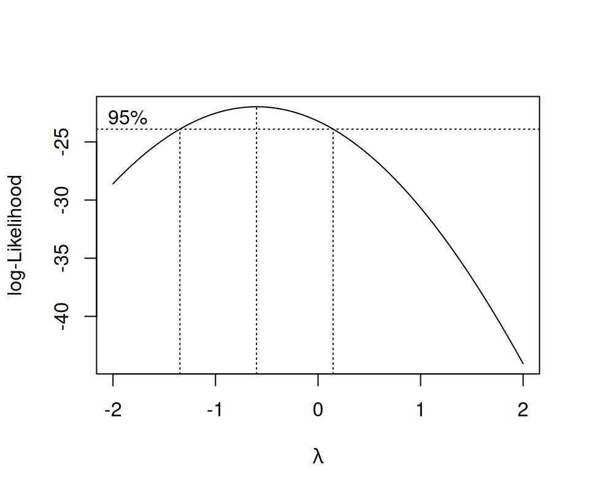
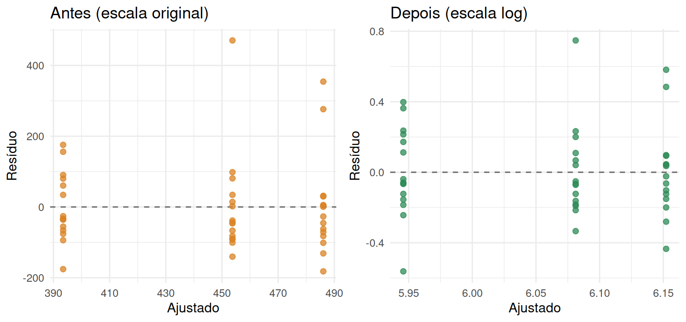

3.5 Verificação de pressupostos
Toda a inferência das seções anteriores — testes \(F\), intervalos de confiança, cálculos de tamanho amostral — depende de três suposições sobre os erros do modelo: normalidade, variância constante entre tratamentos (homocedasticidade) e independência. A independência é garantida (ou não) pelo desenho — pela aleatorização e pela ausência de dependências não modeladas, como o submuestreo tratado incorretamente — e não se verifica diretamente nos dados; normalidade e homocedasticidade, por sua vez, são checáveis a partir dos resíduos do modelo ajustado, \(e_{ij} = Y_{ij} - \bar Y_{i\cdot}\) — em notação matricial da Seção 3.2.2, o vetor \(\mathbf{e} = (\mathbf{I}_N-\mathbf{P}_X)\mathbf{Y}\), a projeção de \(\mathbf{Y}\) sobre o complemento ortogonal do espaço-coluna de \(\mathbf{X}\). É precisamente por \(\mathbf{e}\) viver nesse subespaço, ortogonal aos valores ajustados, que ele funciona como um proxy observável dos erros \(\boldsymbol{\varepsilon}\) não observáveis.
Tempos de reação são um exemplo clássico de variável que raramente é normal em escala bruta: a distribuição costuma ser assimétrica à direita (a maioria das respostas é rápida, mas há uma cauda de respostas bem mais lentas) e a variância tende a crescer com a média — sujeitos/condições mais lentos não são apenas deslocados, são também mais variáveis. Simulamos abaixo um cenário assim, com efeito multiplicativo (e não aditivo) do tipo de distração.
3.5.1 Normalidade: gráfico Q-Q e testes formais
set.seed(1234)
condicao <- c("Nenhuma", "Sonora", "Visual")
n <- 15
media_base <- c(420, 470, 560)
cv <- 0.28 # erro multiplicativo: log(tempo) tem desvio-padrão constante nessa escala
dados_het <- tibble(
sujeito = 1:(3 * n),
condicao = factor(rep(condicao, each = n), levels = condicao),
tempo = rep(media_base, each = n) * exp(rnorm(3 * n, 0, cv))
)
modelo_het <- aov(tempo ~ condicao, data = dados_het)
O gráfico à esquerda é o Q-Q plot de todos os resíduos combinados; o da direita — um diagnóstico complementar, tão útil quanto o Q-Q e frequentemente esquecido — mostra a distribuição dos resíduos separada por tratamento: além de revelar o mesmo afastamento de simetria (caixas alongadas para cima em vez de centradas), ele já antecipa o próximo pressuposto a checar, porque a altura das três caixas cresce visivelmente de “Nenhuma” para “Visual” — sinal de que a variância não é a mesma nos três grupos, o assunto da próxima seção.
O afastamento sistemático da reta nas caudas do Q-Q — pontos acima da reta à direita, indicando uma cauda mais pesada que a normal — é o padrão típico de assimetria à direita. O gráfico Q-Q é sempre o primeiro diagnóstico: mais informativo que um único número, porque mostra onde (em qual parte da distribuição) o desvio da normalidade ocorre. Ele é complementado, não substituído, por um teste formal — mais útil como confirmação do que o olho já sugeriu do que como árbitro único, sobretudo em amostras pequenas (baixo poder) ou muito grandes (rejeita quase sempre, por desvios sem relevância prática):
##
## Shapiro-Wilk normality test
##
## data: residuals(modelo_het)
## W = 0.84551, p-value = 2.812e-05O teste de Shapiro-Wilk (Shapiro & Wilk, 1965) rejeita a normalidade dos resíduos (\(p < 0{,}001\)), consistente com o Q-Q plot.
3.5.2 Homogeneidade de variância
Antes do teste formal, o gráfico de resíduos contra valores ajustados é o diagnóstico visual mais direto de heterocedasticidade: se a dispersão vertical dos pontos aumenta sistematicamente da esquerda para a direita (grupos com médias maiores), a variância não é constante.
tibble(
ajustado = fitted(modelo_het),
residuo = residuals(modelo_het),
condicao = dados_het$condicao
) %>%
ggplot(aes(ajustado, residuo, color = condicao)) +
geom_hline(yintercept = 0, linetype = "dashed", color = "grey40") +
geom_point(size = 2, alpha = 0.75) +
labs(title = "Resíduos vs. valores ajustados", x = "Valor ajustado (média do grupo)",
y = "Resíduo", color = "Condição") +
theme_minimal(base_size = 13)
O leque se abre visivelmente da esquerda (condição “Nenhuma”, ajustado mais baixo) para a direita (condição “Visual”, ajustado mais alto): os resíduos ficam mais dispersos exatamente onde a média é maior — a marca registrada de um erro multiplicativo, e o mesmo padrão que o teste de Levene, a seguir, tentará (sem muito sucesso, dado o \(n\) pequeno) capturar formalmente.
## Levene's Test for Homogeneity of Variance (center = median)
## Df F value Pr(>F)
## group 2 0.1136 0.8929
## 42O teste de Levene (Levene, 1960) (que compara os desvios absolutos em torno da mediana de cada grupo, sendo por isso mais robusto a não normalidade do que o teste de Bartlett (1937)) não rejeita a homogeneidade de variância aqui — mas isso não deve surpreender: com apenas 15 observações por grupo, o teste tem pouco poder para detectar diferenças de variância moderadas, mesmo quando, por construção (erro multiplicativo) e como o gráfico acima já deixou claro, a variância populacional realmente cresce com a média. É outro lembrete de que ausência de significância não é evidência de que o pressuposto vale — sobretudo em amostras pequenas, a inspeção gráfica continua indispensável.
3.5.3 Transformações usuais
Quando a normalidade e/ou a homocedasticidade falham, a estratégia clássica é transformar a variável resposta para uma escala em que o modelo se comporte melhor, em vez de abandonar a ANOVA por um método menos eficiente. As transformações mais comuns:
- Logaritmo (\(\log Y\)): indicada quando a variância cresce proporcionalmente ao quadrado da média (erro multiplicativo, como simulado acima) — muito comum em tempos, concentrações, contagens grandes e dados sempre positivos com assimetria à direita.
- Raiz quadrada (\(\sqrt{Y}\), ou \(\sqrt{Y+1/2}\) com contagens pequenas ou zeros): indicada quando a variância cresce proporcionalmente à média, o padrão típico de dados de contagem (número de erros, número de respostas corretas).
- Box-Cox (Box & Cox, 1964): uma família de transformações de potência que generaliza as duas anteriores,
\[ Y^{(\lambda)} = \begin{cases} \dfrac{Y^\lambda - 1}{\lambda}, & \lambda \neq 0 \\[4pt] \log Y, & \lambda = 0 \end{cases} \]
em que \(\lambda\) é escolhido pelos dados, maximizando a log-verossimilhança perfilada do modelo ANOVA ajustado a \(Y^{(\lambda)}\) para uma grade de valores de \(\lambda\) (frequentemente entre \(-2\) e \(2\)). \(\lambda=1\) (sem transformar), \(\lambda=0\) (log) e \(\lambda=1/2\) (raiz quadrada) são casos particulares interpretáveis dessa família.

## [1] -0.6O valor que maximiza a verossimilhança perfilada é \(\hat\lambda \approx -0.6\), mas o intervalo de verossimilhança de 95% ao redor desse máximo é largo o bastante para incluir \(\lambda=0\) — ou seja, a transformação logarítmica, mais simples de interpretar (diferenças na escala log correspondem a razões, não diferenças, na escala original), é estatisticamente compatível com os dados e é a escolha usual nesse tipo de situação:
dados_het <- dados_het %>% mutate(log_tempo = log(tempo))
modelo_log <- aov(log_tempo ~ condicao, data = dados_het)
shapiro.test(residuals(modelo_log))##
## Shapiro-Wilk normality test
##
## data: residuals(modelo_log)
## W = 0.95569, p-value = 0.08363## Levene's Test for Homogeneity of Variance (center = median)
## Df F value Pr(>F)
## group 2 0.0259 0.9744
## 42Depois de transformar, o teste de Shapiro-Wilk deixa de rejeitar a normalidade (\(p \approx 0.084\)) e a homogeneidade de variância permanece não rejeitada — evidência de que a escala logarítmica é adequada para a ANOVA neste conjunto de dados. As conclusões substantivas devem então ser reportadas na escala transformada (por exemplo, “a condição visual aumenta o tempo de reação em um fator estimado de…”), com cuidado ao traduzir de volta diferenças na escala log para razões multiplicativas na escala original.

O leque de dispersão que crescia da esquerda para a direita no painel “Antes” desaparece no painel “Depois”: na escala log, a variabilidade dos resíduos é visualmente comparável entre as três condições, sinal direto (mais informativo do que qualquer teste isolado) de que a transformação cumpriu o que se propunha — estabilizar a variância sem distorcer a estrutura de tratamento que estamos tentando comparar.
Reunindo as três camadas desenvolvidas até aqui para o DCA a uma via: a camada algébrica (Seção 3.2.2) mostra que \(SQ_{\text{Trat}}\) e \(SQ_E\) são formas quadráticas em projeções ortogonais, herdadas diretamente do Capítulo 2; a camada causal (Seção 3.2.3) mostra que \(\bar Y_i^{\cdot}-\bar Y_k^{\cdot}\) estima um efeito de tratamento bem definido independentemente do modelo normal, só em função da aleatorização; e a camada distribucional (Seções 3.2.5 a 3.5.3) usa a normalidade para transformar essa base algébrica e causal em testes e ICs exatos em amostra finita — e para diagnosticar quando essa última camada, especificamente, está em risco.
O restante deste capítulo trata de perguntas mais refinadas dentro do mesmo DCA — comparações planejadas (contrastes), tendências ao longo de níveis quantitativos (polinômios ortogonais), comparações múltiplas a posteriori, ajuste por covariáveis (ANCOVA) e a alternativa não paramétrica de Kruskal-Wallis quando nem mesmo as transformações da seção anterior bastam para justificar o modelo normal.